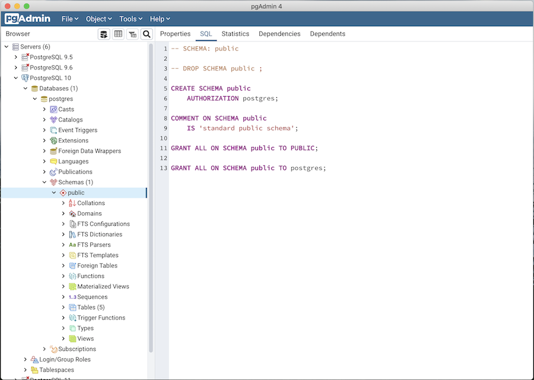
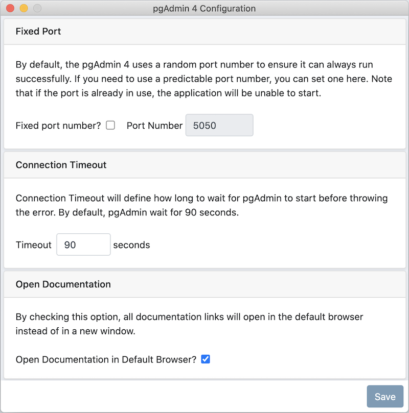
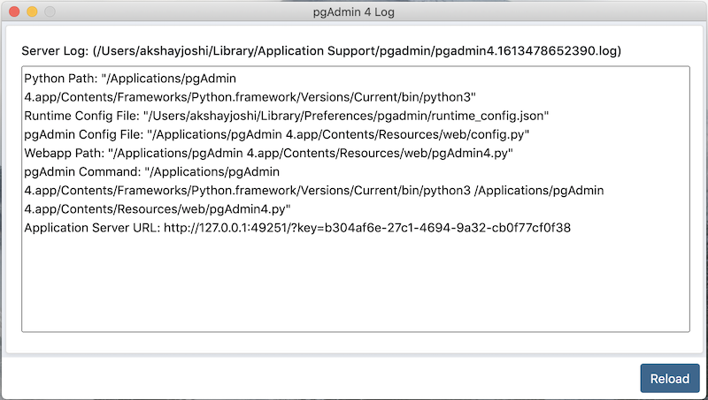
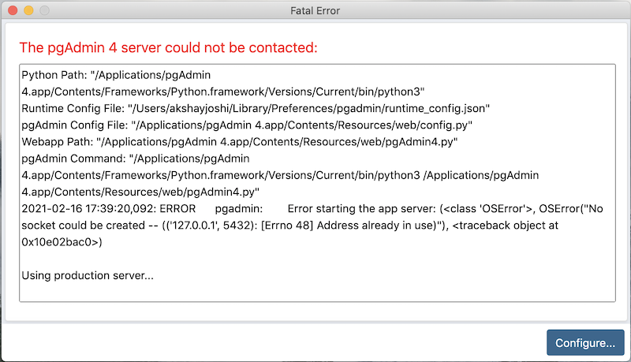

Desktop Deployment¶
pgAdmin may be deployed as a desktop application by configuring the application to run in desktop mode and then utilising the desktop runtime to host the program on a supported Windows, Mac OS X or Linux installation.
The desktop runtime is a standalone application that when launched, runs the pgAdmin server and opens a window to render the user interface.
Note
Pre-compiled and configured installation packages are available for a number of platforms. These packages should be used by end-users whereever possible - the following information is useful for the maintainers of those packages and users interested in understanding how pgAdmin works.
See also
For detailed instructions on building and configuring pgAdmin from scratch, please see the README file in the top level directory of the source code. For convenience, you can find the latest version of the file here, but be aware that this may differ from the version included with the source code for a specific version of pgAdmin.
Configuration¶
From pgAdmin 4 v2 onwards, the default configuration mode is server, however, this is overridden by the desktop runtime at startup. In most environments, no Python configuration is required unless you wish to override other default settings.
See The config.py File for more information on configuration settings.
Desktop Runtime Standalone Application¶
The Desktop Runtime is based on NWjs which integrates a browser and the Python server creating a standalone application.
Configuration Dialog¶
Use the Runtime Menu to access the Configuration dialog:
Following are the details of the Fixed port number?, Port Number, Connection Timeout, and ‘Open Documentation in Default Browser?’ configuration parameters:
Key |
Type |
Purpose |
|---|---|---|
FixedPort |
Boolean |
Use a fixed network port number rather than a random one. |
PortNumber |
Integer |
The port number to use, if using a fixed port. |
ConnectionTimeout |
Integer |
The number of seconds to wait for application server startup. |
Open Documentation in Default Browser |
Boolean |
By checking this option, all documentation links will open in the default browser instead of in a new window. |
Log dialog¶
Use the Runtime Menu to access the Log dialog:
Click on the Reload button at the bottom to view the latest logs of pgAdmin 4 Server.
When executed, the runtime will automatically try to execute the pgAdmin Python application. If execution fails, it will prompt you with error message displaying a Configure button at the bottom. You can configure a fixed port number to avoid clashes of the default random port number with other applications and a connection timeout if desired.
If the error is related to Python Path or pgAdmin Python file then you need to create a file named ‘dev_config.json’ and specify the following entries:
{
"pythonPath": "/path/to/python.exe",
"pgadminFile": "/path/to/pgAdmin4.py"
}
Note that the dev_config.py file should only be required by developers who are working outside of a standard installation.
The configuration settings are stored in runtime_config.json file, which will be available on Unix systems (~/.local/share/pgadmin/), on Mac OS X (~/Library/Preferences/pgadmin), and on Windows (%APPDATA%/pgadmin).